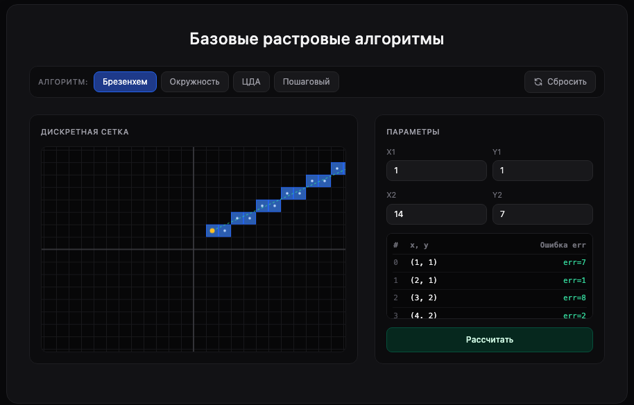
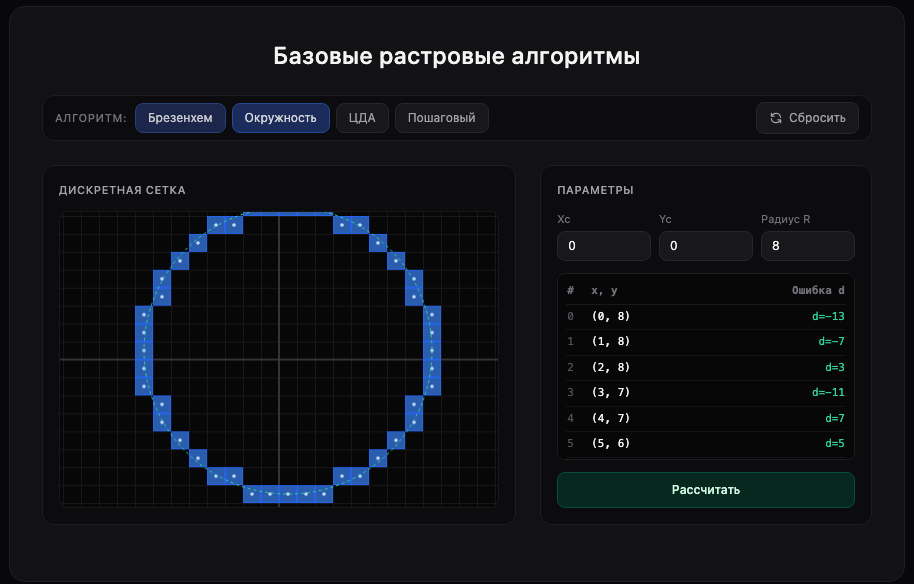

Белорусский государственный университет
Факультет прикладной математики и информатики
ОТЧЁТ
по лабораторной работе №3 по компьютерной графике
Базовые растровые алгоритмы: пошаговый алгоритм, ЦДА, алгоритмы Брезенхема
Выполнил:
студент 4 группы 3 курса
Дикан Д. А.
Преподаватель:
старший преподаватель
Соловей Сергей Сергеевич
Минск, 2026
1. Цель работы
Изучить базовые алгоритмы растеризации отрезка (пошаговый алгоритм, цифровой дифференциальный анализатор, алгоритм Брезенхема) и окружности (алгоритм Брезенхема), провести сравнительный анализ их точности и времени работы, а также разработать веб-приложение для наглядной визуализации дискретной координатной сетки с протоколом вычислений.
2. Теоретические сведения
-
Растровая сетка. Пикселю с целочисленными координатами (x, y) соответствует ячейка [x, x + 1) × [y, y + 1) с центром в точке (x + 0.5, y + 0.5). Задача растеризации состоит в выборе пикселей, центры которых минимизируют расстояние до идеальной математической кривой.
-
Пошаговый алгоритм. Использует явное каноническое уравнение прямой:
y = k · x + b, где k = Δy / Δx, b = y1 - k · x1.
При |k| ≤ 1 ведущей осью является Ox (шаг s = sign(Δx)), и на каждой итерации вычисляется:
xi+1 = xi + s,
yi+1 = yi + k · s,
пиксель: (xi+1, round(yi+1)).
При |k| > 1 ведущей становится ось Oy (шаг по y, вычисление x = (y - b) / k).
-
Алгоритм ЦДА (Цифровой дифференциальный анализатор). Длина проекции отрезка задает необходимое число шагов:
L = max(|Δx|, |Δy|).
Инкрементальные приращения координат на один шаг составляют:
δx = Δx / L, δy = Δy / L.
Рекуррентное соотношение для координат и итогового пикселя:
xi+1 = xi + δx,
yi+1 = yi + δy,
пиксель: (round(xi+1), round(yi+1)).
-
Алгоритм Брезенхема для отрезка. Базовый случай 0 ≤ Δy ≤ Δx. Разностный целочисленный параметр ошибки:
e0 = 2Δy - Δx.
Формула пересчета ошибки и выбора следующего пикселя:
ei+1 =
{ ei + 2Δy, если ei < 0 (шаг x++),
{ ei + 2(Δy - Δx), если ei ≥ 0 (шаг x++, y++).
Все операции выполняются строго в целых числах без операций деления и вещественного типа данных.
-
Алгоритм Брезенхема для окружности. Окружность x2 + y2 = R2 разбивается координатными осями и диагоналями x = ±y на 8 октантов (по 2 в каждой из 4 четвертей). Для сектора от 0° до 45° (где 0 ≤ x ≤ y при начальной точке (0, R)) начальное значение решающей функции:
d0 = 3 - 2R.
Итерационный пересчет:
di+1 =
{ di + 4xi + 6, если di < 0 (шаг вправо: x++),
{ di + 4(xi - yi) + 10, если di ≥ 0 (шаг по диагонали: x++, y--).
Остальные 7 октантов формируются синхронным отражением: (±x, ±y) и (±y, ±x).
3. Архитектура и реализация приложения
- Серверная часть (Python 3, Flask): файл
processing.py реализует алгоритмы растеризации и формирования протокола шагов, файл main.py обеспечивает работу локального веб-сервера с JSON API /api/rasterize.
- Клиентская часть (HTML5, Tailwind CSS, Canvas API): интерактивный холст с координатной сеткой, пикселями, непрерывной математической линией, переключением алгоритмов и таблицей протокола шагов.
4. Результаты работы приложения
Ниже представлены скриншоты разработанного интерфейса при растеризации отрезка и окружности:

Рис. 1: Растеризация отрезка алгоритмом Брезенхема в интерфейсе приложения

Рис. 2: Растеризация окружности алгоритмом Брезенхема в интерфейсе приложения
Временные характеристики и сравнение методов
В соответствии с заданием измерено время работы функций на выборке из 1000 произвольных отрезков:
| Алгоритм |
Время (1000 линий) |
Особенности выполнения в коде Python |
| Алгоритм Брезенхема |
10.9 мс |
Целочисленные операции (сложение, вычитание, ветвление). Отсутствуют вызовы функций и вещественные числа. |
| Пошаговый алгоритм |
22.7 мс |
Вычисление y = kx + b (вещественное умножение) и один вызов round() на итерацию. |
| Алгоритм ЦДА |
27.8 мс |
Два вызова round(x) и round(y) на строке 58 processing.py в каждом цикле. |
Почему ЦДА выполняется дольше: в коде algo_dda на каждой итерации выполняются вызовы xi, yi = int(round(x)), int(round(y)). В Python вызов встроенной функции несёт накладные расходы интерпретатора. В пошаговом методе round() вызывается только для ведомой координаты (1 раз за шаг), а в алгоритме Брезенхема вещественные числа и вызовы round() отсутствуют полностью, что делает его в 2.5 раза быстрее.
Анализ точности и отклонений от идеальной прямой
При растеризации непрерывной прямой y(x) = kx + b центры выбранных пикселей (xp, yp) имеют погрешность относительно идеальной линии. На выборке из 1000 линий (95 190 пикселей) получены следующие точные показатели:
| Показатель отклонения |
Пошаговый метод |
Алгоритм ЦДА |
Алгоритм Брезенхема |
| Макс. отклонение по ведомой оси |yp - y(x)| |
0.5000 пкс (теор. 0.5) |
0.5000 пкс (теор. 0.5) |
0.5000 пкс (теор. 0.5) |
| Среднее отклонение по ведомой оси |
0.2441 пкс (теор. 0.25) |
0.2441 пкс (теор. 0.25) |
0.2441 пкс (теор. 0.25) |
| Среднее перпендикулярное расстояние d⊥ |
0.2205 пкс |
0.2205 пкс |
0.2205 пкс |
| Совпадение растра с Брезенхемом |
99.45% (расхождение 0.55%) |
99.47% (расхождение 0.53%) |
100% (эталон) |
Как формируется отклонение: дискретная сетка ограничивает координаты пикселей целыми числами, поэтому погрешность округления вещественной координаты к ближайшему целому теоретически ограничена величиной половины шага сетки: max |yp - y(x)| = 0.5 пикселя. Небольшое расхождение в ~0.5% пикселей между Брезенхемом и ЦДА возникает строго в точках, где прямая проходит ровно посередине между соседними пикселями (дробная часть ровно 0.5): Брезенхем выбирает верхний пиксель по условию e ≥ 0, а функция round() в Python округляет к ближайшему четному числу.
5. Выводы
-
Точность растеризации. Все три алгоритма строят линию с максимальным отклонением от идеала ровно 0.5 пикселя и средним 0.244 пикселя. Более 99.4% пикселей у всех методов полностью совпадают.
-
Быстродействие. Алгоритм Брезенхема превосходит пошаговый метод и ЦДА более чем в 2 раза за счет целочисленной арифметики и отсутствия вызовов функций округления
round().
-
Симметрия окружности. Использование 8-кратной симметрии позволяет рассчитывать координаты только для одного сектора в 45°, заполняя все 4 четверти зеркальным отражением координат.